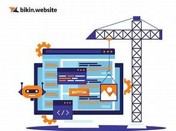

Website Builder
Diterbitkan: 9 April 2025
Website Builder memungkinkan siapa saja membangun situs web profesional tanpa perlu menulis satu baris kode pun. Tools seperti Wix, Squarespace, dan Webflow menawarkan template menarik dan editor visual intuitif.
1. Antarmuka User-Friendly
Drag-and-drop builder sangat mudah digunakan dan cocok untuk pemula maupun bisnis kecil yang ingin membangun online presence secara cepat.
2. Fitur Lengkap
Fitur seperti SEO bawaan, e-commerce, integrasi sosial, dan hosting membuat Website Builder menjadi solusi all-in-one yang efisien.
3. Keterbatasan Kustomisasi
Meskipun cocok untuk kebutuhan umum, Website Builder memiliki batasan bagi pengguna lanjutan yang menginginkan kontrol penuh terhadap kode.
Kesimpulan: Website Builder sangat cocok untuk proyek cepat dan sederhana. Namun, bagi pengembang tingkat lanjut, solusi kustom masih lebih fleksibel.
← Kembali ke Blog